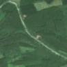
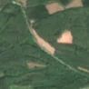

2,1 ha · Satnoeni, com. Unirea
văzută schimbată prima dată pe 17 iul. 2026


Autorizația cea mai apropiată nu acoperă tăierea: schimbarea cade în afara parcelei autorizate.
APV 2400122600180 · Ocolul Silvic Călărași, valabilă 8 iul. 2026 – 23 oct. 2026, la 76 m
Terenul: pădure de stat, după amenajamentul silvic publicat.
Ce se vede în poze: În poza detaliată zona marcată era acoperită de pădure deasă, cu un drum îngust prin ea. În poza «după» apare o fâșie de pământ golaș, cu margini clare, în timp ce pădurea din jur rămâne verde, deci copacii au fost tăiați.
în arie protejată: Canaralele Dunării, Dunăre - Ostroave